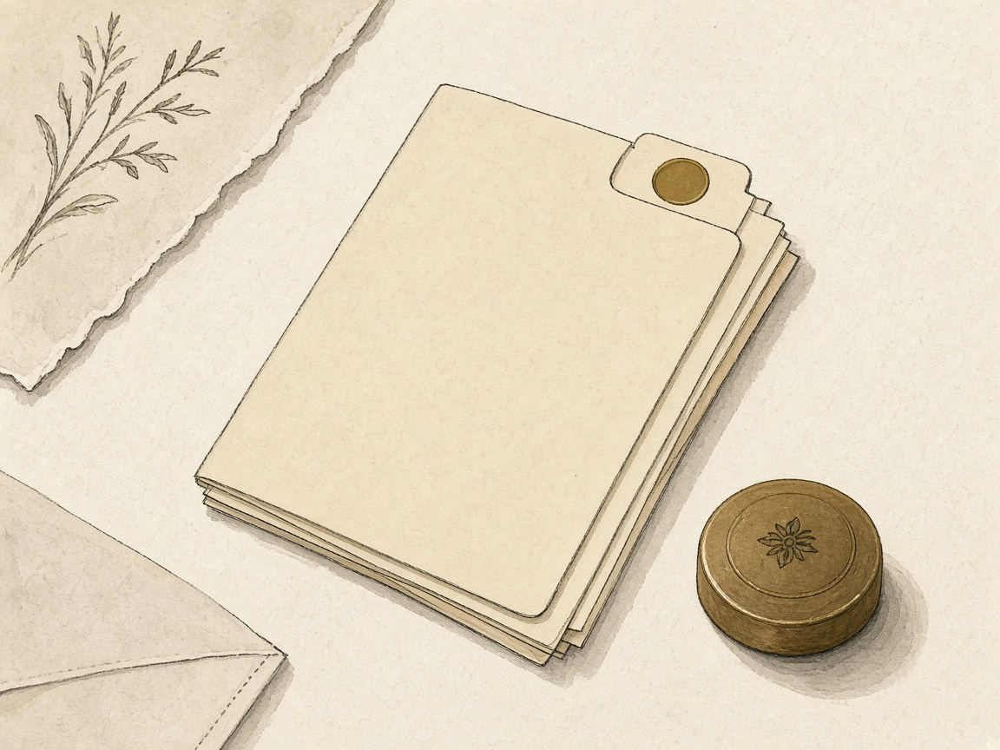

One site
Open the site when it has no administrator. Setup has three steps.
- Confirm the document root. On shared hosting, point the domain at the public folder. If the host cannot change the document root, the install folder itself can be the document root.
- Choose the storage directory. Adlexone creates the settings, the database, and the attachments folder there, and checks that PHP can write them. A folder inside the website is refused when a browser can read it.
- Set the name shown on the sign-in page. It can be the organisation, such as Health. Then create the first administrator.